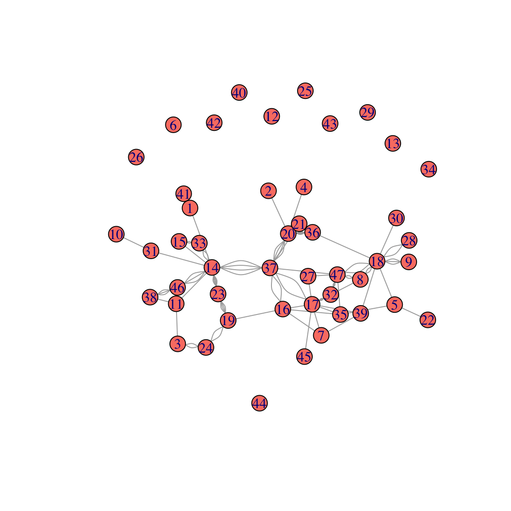
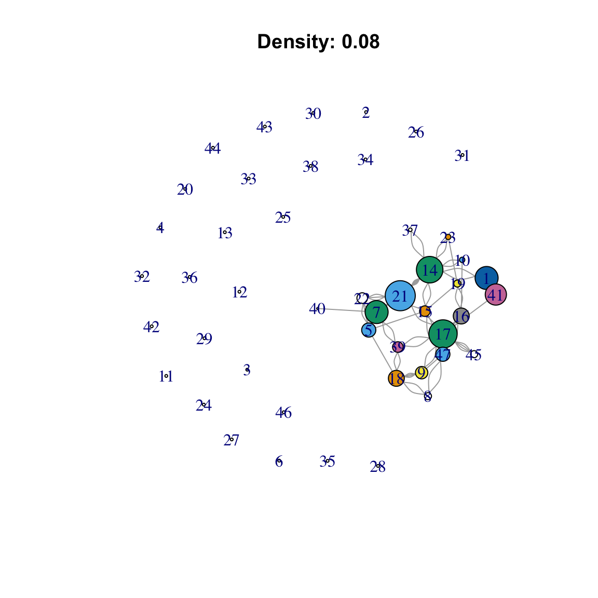
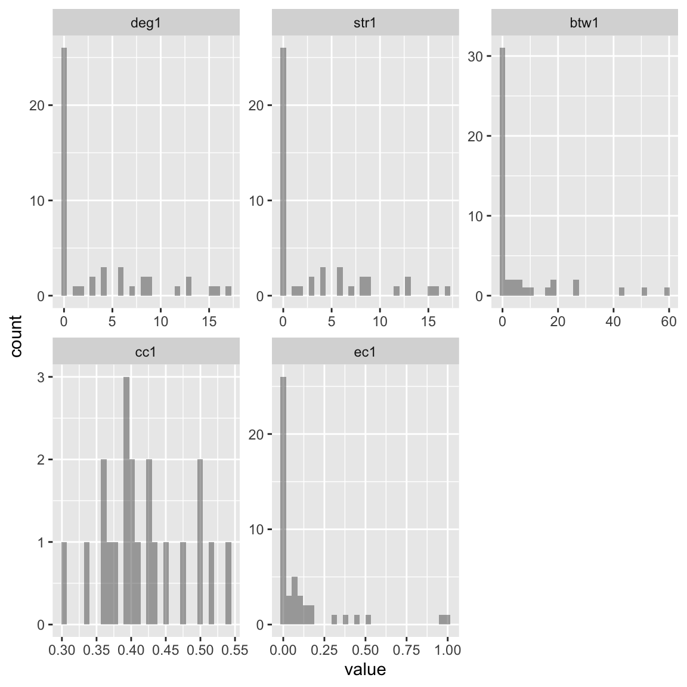

Descriptives Network Statistics
This descriptive network analysis aimed to elucidate the underlying structure and connectivity patterns within the faculty collaboration dataset. Key insights revealed the presence of densely connected hubs and increasing density over the two periods.
#' Creating object snet1 and snet2, each containing the adjacency matrix for wave 1
#' of the network. The diagonal of snet1 was set to zero to remove self-loops.
#' Converting the snet1/snet2 adjacency matrix to an igraph graph object called snet2_g/snet1_g
snet1 <- df_network[[1]]
diag(snet1) <- 0
snet1_g <- igraph::graph_from_adjacency_matrix(snet1, mode = c("undirected"))
snet2 <- df_network[[2]]
diag(snet2) <- 0
snet2_g <- igraph::graph_from_adjacency_matrix(snet2, mode = c("undirected"))Network Visualization
Mapping node size to degree centrality highlights well-connected members, whereas node color based on betweenness centrality spotlights potential brokers occupying strategically advantageous bridging positions.
These visualizations provide an intuitive overview of network topology and dynamics. We see increased connectivity from Wave 1 to Wave 2, reflected in more nodes, edges, and higher density in the later time period. Node size and color also reveal specific members occupying topologically important positions.
#' Plot the Waves 1 and 2 networks with default vertex size 10 and color skyblue/salmon. Sizing nodes by degree centrality and coloring nodes by betweenness centrality in each network. Density labels are added and snet1_g and snet2_g are plotted with labels.
plot(snet1_g,
vertex.size = 10,
vertex.color = "skyblue"
)
V(snet1_g)$size <- igraph::degree(snet1_g)
V(snet2_g)$size <- igraph::degree(snet2_g)
V(snet1_g)$color <- igraph::betweenness(snet1_g)
V(snet2_g)$color <- igraph::betweenness(snet2_g)
snet1_label <- paste("Density:", round(edge_density(snet1_g), 2))
snet2_label <- paste("Density:", round(edge_density(snet2_g), 2))Figure 1. Wave 1 network visualization

Figure 2. Wave 2 network visualization
Centrality Metrics
While visual inspection provides intuitive insights, quantitative network metrics allow for a more rigorous characterization of the importance of individual nodes. Key centrality measures were calculated using the following igraph functions.
Degree: Number of neighbors Strength: Summed tie weights Betweenness: Frequency in shortest paths Closeness: Inverse of farness to others Eigenvector: Connections to other central nodes
Each metric provides a complementary perspective on the structural prominence of the nodes. The distributions of the centrality values are shown through histograms for waves 1 and 2 (Figures 3 and 4). The degree and strength exhibited the most skewed, heavy-tailed distributions, indicative of a few hubs alongside many peripheral nodes. The other metrics followed a uniform distribution.
#' Calculation of degree, strength, betweenness, closeness, and eigenvector centrality for snet1_g and snet2_g. Centrality measures are combined into data frames df1 and df2 for snet1_g and snet2_g. Removing nonfinite values from df1 and df2. Melt df1 and df2 into a long format as df1_m and df2_m.
(deg1 <- degree(snet1_g)) [1] 13 0 0 0 8 0 13 4 7 3 0 0 0 15 6 9 16 9 4 0 17 6 3 0 0
[26] 0 0 0 0 0 0 0 0 0 0 0 2 0 6 1 12 0 0 0 4 0 8 [1] 13 0 0 0 8 0 13 4 7 3 0 0 0 15 6 9 16 9 4 0 17 6 3 0 0
[26] 0 0 0 0 0 0 0 0 0 0 0 2 0 6 1 12 0 0 0 4 0 8 [1] 5.2116499 0.0000000 0.0000000 0.0000000 18.6177336 0.0000000
[7] 27.0356094 0.7426471 4.8030010 2.0833333 0.0000000 0.0000000
[13] 0.0000000 51.3563896 25.7708138 16.2215826 59.2183426 9.7066339
[19] 4.0911565 0.0000000 42.7981179 0.9668223 1.7777778 0.0000000
[25] 0.0000000 0.0000000 0.0000000 0.0000000 0.0000000 0.0000000
[31] 0.0000000 0.0000000 0.0000000 0.0000000 0.0000000 0.0000000
[37] 0.0000000 0.0000000 7.8898433 0.0000000 7.0451496 0.0000000
[43] 0.0000000 0.0000000 0.0000000 0.0000000 18.6633959 [1] 0.3773585 NaN NaN NaN 0.4347826 NaN 0.4255319
[8] 0.3703704 0.4081633 0.4000000 NaN NaN NaN 0.5000000
[15] 0.5000000 0.4545455 0.5405405 0.3921569 0.4000000 NaN 0.5128205
[22] 0.3921569 0.3571429 NaN NaN NaN NaN NaN
[29] NaN NaN NaN NaN NaN NaN NaN
[36] NaN 0.3389831 NaN 0.4255319 0.3030303 0.3921569 NaN
[43] NaN NaN 0.3571429 NaN 0.4761905 [1] 1.000000e+00 2.062417e-17 2.062417e-17 2.062417e-17 1.602761e-01
[6] 2.062417e-17 3.838289e-01 2.527062e-02 8.152279e-02 9.063534e-02
[11] 2.062417e-17 2.062417e-17 2.062417e-17 4.613029e-01 1.100549e-01
[16] 1.304522e-01 2.975459e-01 6.842867e-02 3.905177e-02 2.062417e-17
[21] 5.267944e-01 1.774058e-01 8.276863e-02 2.062417e-17 2.062417e-17
[26] 2.062417e-17 2.062417e-17 2.062417e-17 2.062417e-17 2.062417e-17
[31] 2.062417e-17 2.062417e-17 2.062417e-17 2.062417e-17 2.062417e-17
[36] 2.062417e-17 7.940749e-02 2.062417e-17 1.290692e-01 3.303566e-02
[41] 9.723653e-01 2.062417e-17 2.062417e-17 2.062417e-17 1.024376e-01
[46] 2.062417e-17 7.837624e-02 [1] 12 1 3 1 3 0 3 5 3 1 10 0 0 18 3 6 12 13 7 15 8 1 9 4 0
[26] 0 2 2 0 1 2 6 4 0 4 17 14 4 3 0 11 0 0 0 1 13 10 [1] 12 1 3 1 3 0 3 5 3 1 10 0 0 18 3 6 12 13 7 15 8 1 9 4 0
[26] 0 2 2 0 1 2 6 4 0 4 17 14 4 3 0 11 0 0 0 1 13 10 [1] 34.0000000 0.0000000 3.5196078 0.0000000 36.7575758 0.0000000
[7] 2.9242424 7.9267620 0.0000000 0.0000000 29.8224090 0.0000000
[13] 0.0000000 289.6640502 0.0000000 73.4901515 123.9248981 136.8518228
[19] 42.8163420 82.0133264 2.9192579 0.0000000 16.4803922 8.8148459
[25] 0.0000000 0.0000000 0.1833333 0.0000000 0.0000000 0.0000000
[31] 34.0000000 1.6500000 0.0000000 0.0000000 38.2203463 31.5529217
[37] 294.8221951 0.0000000 10.6376234 0.0000000 0.0000000 0.0000000
[43] 0.0000000 0.0000000 0.0000000 27.8823529 109.1255432 [1] 0.2991453 0.2671756 0.2554745 0.2671756 0.2966102 NaN 0.3271028
[8] 0.3365385 0.2651515 0.2317881 0.3125000 NaN NaN 0.4117647
[15] 0.2966102 0.3932584 0.4166667 0.3571429 0.3271028 0.3608247 0.3465347
[22] 0.2302632 0.3181818 0.2611940 NaN NaN 0.3153153 0.2651515
[29] NaN 0.2651515 0.2991453 0.3153153 0.2966102 NaN 0.3431373
[36] 0.3240741 0.4666667 0.2413793 0.3365385 NaN 0.2317881 NaN
[43] NaN NaN 0.2966102 0.3070175 0.4022989 [1] 0.099706917 0.072021034 0.009163461 0.072021034 0.010965793 0.000000000
[7] 0.016921207 0.038464951 0.027247478 0.001670691 0.094939661 0.000000000
[13] 0.000000000 0.252743420 0.027851763 0.089048164 0.101115361 0.112079852
[19] 0.046797402 0.888754566 0.604191063 0.000888623 0.117575543 0.009069679
[25] 0.000000000 0.000000000 0.014246971 0.018164985 0.000000000 0.009082493
[31] 0.020616679 0.042740912 0.045476571 0.000000000 0.022351692 1.000000000
[37] 0.455843622 0.037967411 0.018647693 0.000000000 0.088878247 0.000000000
[43] 0.000000000 0.000000000 0.008193975 0.124528701 0.074695224df1 <- data.frame(deg1, str1, btw1, cc1, ec1)
df2 <- data.frame(deg2, str2, btw2, cc2, ec2)
df1 <- data.frame(deg1, str1, btw1, cc1, ec1)
df2 <- data.frame(deg2, str2, btw2, cc2, ec2)
df1_m <- reshape2::melt(df1, measure.vars = names(df1))
df2_m <- reshape2::melt(df2, measure.vars = names(df2))The degree and strength show highly skewed distributions, with most nodes having low values and a few hubs having very high values. This indicates inequality in the direct connections.
Betweenness also exhibited some skewness, with a few critical bridging nodes. Most nodes fall infrequently on the shortest paths.
Closeness and eigenvectors follow more uniform distributions, suggesting less inequality in reach and influence propagation.
The higher maximum degree and strength in snet2_g shows
the emergence of better connected hubs over time.
Eigenvector centrality deemphasizes connections to peripheral nodes, highlighting connections between influential nodes.
In summary, the centrality distributions provide complementary metrics to assess node importance. Degree/strength captures direct connections, betweenness evaluates positional values, and eigenvector incorporates indirect influence. The inequality observed in degree and strength is typical in social networks. Centrality provides a rigorous quantification of node prominence.
ggplot(df1_m, aes(x = value, fill = variable)) +
geom_histogram(alpha = 0.5, position = "identity", bins = 30)Warning: Removed 26 rows containing non-finite values (`stat_bin()`).Figure 3. Wave 1 centrality metric distributions.
ggplot(df2_m, aes(x = value, fill = variable)) +
geom_histogram(alpha = 0.5, position = "identity", bins = 30)Warning: Removed 11 rows containing non-finite values (`stat_bin()`).Figure 4. Wave 2 centrality metric distributions.
Nodes with a high degree of strength had abundant direct collaborators. High betweenness nodes bridge otherwise disconnected groups. Closeness signifies the reach and efficiency of the information diffusion. Finally, the eigenvector centrality accounts for a node’s connections with other influential members.
#' Create faceted histogram plots for centrality measures
ggplot(df1_m, aes(x = value)) +
geom_histogram(alpha = 0.5, bins = 30) +
facet_wrap(~variable, scales = "free")Warning: Removed 26 rows containing non-finite values (`stat_bin()`).
ggplot(df2_m, aes(x = value)) +
geom_histogram(alpha = 0.5, bins = 30) +
facet_wrap(~variable, scales = "free")Warning: Removed 11 rows containing non-finite values (`stat_bin()`).Degree Distribution
The degree distribution provides the probability of nodes having a certain number of connections.
#' Calculating the degree distributions for snet1_g and snet2_g. Creating data frames df1 and df2 from degree distributions. Histograms of df1 and df2 degree distributions.
(sdegree <- igraph::degree(snet1_g)) [1] 13 0 0 0 8 0 13 4 7 3 0 0 0 15 6 9 16 9 4 0 17 6 3 0 0
[26] 0 0 0 0 0 0 0 0 0 0 0 2 0 6 1 12 0 0 0 4 0 8 [1] 12 1 3 1 3 0 3 5 3 1 10 0 0 18 3 6 12 13 7 15 8 1 9 4 0
[26] 0 2 2 0 1 2 6 4 0 4 17 14 4 3 0 11 0 0 0 1 13 10The degree distributions show the probability of nodes having a
certain number of connections in the snet1_g and
snet2_g networks. Some key points:
- Degree distributions have long right-skewed tails. This indicates the presence of high-degree hub nodes with many connections.
However, most nodes had low degree values near the start of the distributions. This indicates that most nodes have only a few connections.
Comparing the two distributions,
snet2_ghas more nodes with higher degree values thansnet1_g.This aligns with it being a more dense network.The maximum degree is 17 in
snet1_gand 18 in `snet2_g,’ indicating the hub nodes gained more connections between the two networks.
In summary, heavy-tailed degree distributions are typical for
real-world networks. The coexistence of hubs and peripheral nodes
implies inequality in connectedness. Snet2_g shows greater
connectivity of hubs over time.
The degree distributions provide a probabilistic summary of node connectivity and evidence for the emergence of well-connected hubs as networks evolve. They complemented the visualizations and metrics used to analyze the topology.
Figure 5. Wave 1 degree distribution
ggplot(df1, aes(x = degree)) +
geom_histogram(bins = 30, color = "darkblue", fill = "lightblue") +
ggtitle("Degree Distribution of Network 1")Figure 6. Wave 2 degree distribution
ggplot(df2, aes(x = degree)) +
geom_histogram(bins = 30, color = "darkred", fill = "pink") +
ggtitle("Degree Distribution of Network 2")The long tails indicate the presence of well-connected hubs along with a majority of nodes with a low degree. A comparison of the distributions shows an increase in high-degree nodes from Wave 1 to Wave 2, reflecting the growth in connectivity over time.
Local Structure
The triad census revealed signature local clustering patterns. The predominance of open and closed triads indicated a strong collaborative closure impulse within the network.
A greater frequency of closed triads in Wave 2 signifies increased clustering arising from a higher density over time.
#' Calculating dyad census, triad census, edge density and transitivity
igraph::dyad.census(snet1_g) $mut
[1] 33
$asym
[1] 0
$null
[1] 1048 [1] 15764 0 358 0 0 0 0 0 0 0 91 0
[13] 0 0 0 2[1] 0.07678076$mut
[1] 53
$asym
[1] 0
$null
[1] 1028 [1] 14899 0 1150 0 0 0 0 0 0 0 158 0
[13] 0 0 0 8[1] 0.107308Comparing snet1_g and snet2_g:
snet2_ghas more mutual dyads thansnet1_g(53 vs 33) indicating it is more dense.snet2_ghas more closed triads thansnet1_g(1150 vs 358) indicating more clustering.snet2_ghas a higher edge density thansnet1_g(0.107 vs 0.077) also indicating it is more dense overall.
So snet2_g appears to be a more interconnected, dense
network with more clustering than snet1_g. The triad and
dyad census provide quantitative evidence to complement visual analysis.
The code calculates key metrics to characterize network topologies.
Transitivity
The transitivity values quantify the level of clustering in the two network objects, snet1_g and snet2_g.
[1] 0.06185567[1] 0.1318681Specifically:
snet1_ghas a transitivity score of 0.062. This is considered moderate transitivity. It means that if node A is connected to node B, and node B is connected node C, then there is a 0.062 probability that node A is also connected to node C.snet2_ghas a higher transitivity score of 0.132. This indicates nodes are more likely to form clustered triadic closures compared tosnet1_g.There is a 0.132 probability that two neighbors of a node are connected.
The higher transitivity in snet2_g aligns with the triad
census results, which show more closed triads. This reflects the greater
clustering and interconnectedness between neighbors in the
snet2_g network.
In summary, the transitivity metric quantitatively demonstrates the
increased clustering from snet1_g to `snet2_g,’
complementing the visual analysis and triad census. These values reflect
the tendency to form tightly knit groups and a triadic closure.
Transitivity is a key metric for characterizing the network
cohesion.
Gender differences in h-index
#' Tabulating position variable, creating binary PhD indicator,
# tabulating indicator and converting to a factor in df_soc.
table(df_soc$position)
assistant_prof associate_prof full_prof other phd
10 1 7 6 20
postdoc
3
0 1
27 20 #' Estimating regression of h-index on citations,
#' with PhD and gender predictors,
#, and interaction effects.
fit1 <- lm(gs_h_index ~ gs_total_cites, data = df_soc)
fit2 <- lm(gs_h_index ~ gs_total_cites + is_phd + gender, data = df_soc)
fit3 <- lm(gs_h_index ~ (gs_total_cites + is_phd) * gender, data = df_soc)
fits <- list(fit1, fit2, fit3)
=================================================================================================
Dependent variable:
-----------------------------------------------------------------------
gs_h_index
(1) (2) (3)
-------------------------------------------------------------------------------------------------
gs_total_cites 0.004*** 0.004*** 0.008***
(0.0003) (0.0002) (0.002)
is_phd1 -6.151*** -2.558
(1.633) (1.946)
gendermale 3.282** 7.542***
(1.606) (2.051)
gs_total_cites:gendermale -0.005***
(0.002)
is_phd1:gendermale -6.706**
(3.212)
Constant 6.343*** 7.704*** 4.589***
(1.002) (1.229) (1.497)
-------------------------------------------------------------------------------------------------
Observations 35 35 35
R2 0.895 0.937 0.953
Adjusted R2 0.892 0.931 0.945
Residual Std. Error 5.180 (df = 33) 4.130 (df = 31) 3.707 (df = 29)
F Statistic 282.217*** (df = 1; 33) 154.902*** (df = 3; 31) 117.273*** (df = 5; 29)
=================================================================================================
Note: *p<0.1; **p<0.05; ***p<0.01The regression analysis output shows the results of fitting the three regression models to predict the h-index based on different predictors. The key elements are:
Model 1: - Only uses total citations to predict h-index - Total citations is highly statistically significant (p<0.001) - R-squared of 0.895 indicates total citations explains 89.5% of variance in h-index
Model 2: - Adds PhD status and gender as additional predictors - Total citations remains highly significant - Being a PhD is associated with lower h-index - Being male is associated with higher h-index - R-squared increases to 0.937, indicating additional 9.2% of variance explained by PhD status and gender
Model 3: - Tests interaction effects between total citations, PhD status, and gender - Main effect of total citations now depends on gender - Decrease in h-index for PhDs now depends on gender - Interaction effects are statistically significant - R-squared further increases to 0.953, additional variance explained by interactions
Here, we can conclude from the regression analysis that:
The analysis uses data on faculty in a sociology department, including their h-index, total citations, PhD status, gender, and position.
The very high R-squared values indicate that the h-index is strongly predicted by the factors in the models: citations, gender, and PhD status. This makes sense given that the h-index aims to measure academic impact and citations are directly related.
The negative main effect of PhD status may indicate that junior non-tenure-track faculty (e.g., postdocs) in this department tend to have a lower h-index than tenured/tenure-track faculty.
However, the negative interaction effect between PhD status and gender suggests that this PhD effect is stronger for women than men; thus, female postdocs/non-TT faculty tend to have particularly low h-indices compared to male colleagues.
- The positive main effect for being male and negative interaction with citations indicates that gender differences in the h-index persist even when accounting for citations. Males had a higher h-index than females with similar citations.
In summary, the regression reinforces the descriptive findings that gender inequalities exist in the h-index and the academic impact of sociology faculty, even after controlling for other factors such as citations. The interaction effects highlight that these gender inequalities may be particularly pronounced for junior PhD women.
This boxplot shows the distribution of h-index values segmented by sex. The plot reveals that males have higher median and upper quartile h-index values than females in the dataset. This finding suggests potential gender differences in the h-index.
#' Create boxplot of h-index by gender using base R graphics
boxplot(gs_h_index ~ gender, data = df_soc, main = "H-Index by Gender")The scatterplot shows the relationship between the h-index and total citations for each individual. There is a clear positive correlation, with the h-index increasing as the total citations increase. This is expected because the h-index reflects citations. Points are colored by sex, revealing the cluster of higher h-index males compared to females.
#' Scatterplot of h-index vs total citations
plot(df_soc$gs_h_index, df_soc$gs_total_cites,
xlab = "H-Index", ylab = "Total Citations",
main = "H-Index vs Total Citations"
)Another view of the h-index distribution by sex was created using ggplot2. The boxplot is color-filled by gender category, again showing the tendency for a higher h-index among males compared to females in the dataset. The minimal theme provides a clearer visualization than the base R boxplot.
Appendix
[[1]]
Call:
lm(formula = gs_h_index ~ gs_total_cites, data = df_soc)
Residuals:
Min 1Q Median 3Q Max
-13.8391 -3.5029 -0.4716 2.5150 10.0743
Coefficients:
Estimate Std. Error t value Pr(>|t|)
(Intercept) 6.3426509 1.0023906 6.328 3.69e-07 ***
gs_total_cites 0.0042743 0.0002544 16.799 < 2e-16 ***
---
Signif. codes: 0 '***' 0.001 '**' 0.01 '*' 0.05 '.' 0.1 ' ' 1
Residual standard error: 5.18 on 33 degrees of freedom
(12 observations deleted due to missingness)
Multiple R-squared: 0.8953, Adjusted R-squared: 0.8921
F-statistic: 282.2 on 1 and 33 DF, p-value: < 2.2e-16
[[2]]
Call:
lm(formula = gs_h_index ~ gs_total_cites + is_phd + gender, data = df_soc)
Residuals:
Min 1Q Median 3Q Max
-9.5686 -3.0295 0.0652 1.9057 9.9073
Coefficients:
Estimate Std. Error t value Pr(>|t|)
(Intercept) 7.7044405 1.2290911 6.268 5.73e-07 ***
gs_total_cites 0.0037414 0.0002401 15.581 3.27e-16 ***
is_phd1 -6.1514710 1.6327281 -3.768 0.000694 ***
gendermale 3.2815306 1.6058042 2.044 0.049576 *
---
Signif. codes: 0 '***' 0.001 '**' 0.01 '*' 0.05 '.' 0.1 ' ' 1
Residual standard error: 4.13 on 31 degrees of freedom
(12 observations deleted due to missingness)
Multiple R-squared: 0.9375, Adjusted R-squared: 0.9314
F-statistic: 154.9 on 3 and 31 DF, p-value: < 2.2e-16
[[3]]
Call:
lm(formula = gs_h_index ~ (gs_total_cites + is_phd) * gender,
data = df_soc)
Residuals:
Min 1Q Median 3Q Max
-7.9552 -1.2259 0.1031 2.2827 5.6827
Coefficients:
Estimate Std. Error t value Pr(>|t|)
(Intercept) 4.588918 1.496985 3.065 0.004668 **
gs_total_cites 0.008491 0.001752 4.846 3.9e-05 ***
is_phd1 -2.558026 1.946252 -1.314 0.199035
gendermale 7.541869 2.050902 3.677 0.000953 ***
gs_total_cites:gendermale -0.004914 0.001767 -2.781 0.009416 **
is_phd1:gendermale -6.706284 3.212052 -2.088 0.045705 *
---
Signif. codes: 0 '***' 0.001 '**' 0.01 '*' 0.05 '.' 0.1 ' ' 1
Residual standard error: 3.707 on 29 degrees of freedom
(12 observations deleted due to missingness)
Multiple R-squared: 0.9529, Adjusted R-squared: 0.9447
F-statistic: 117.3 on 5 and 29 DF, p-value: < 2.2e-16